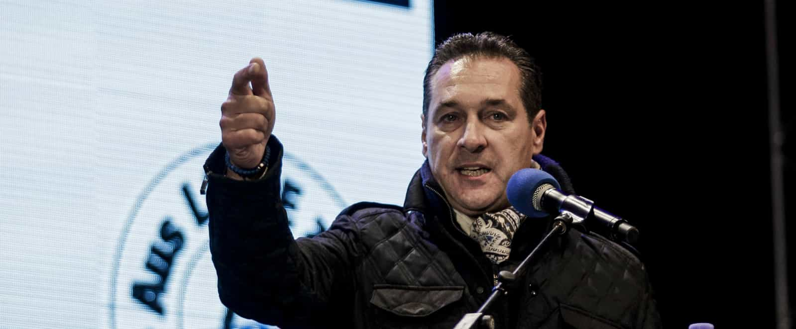
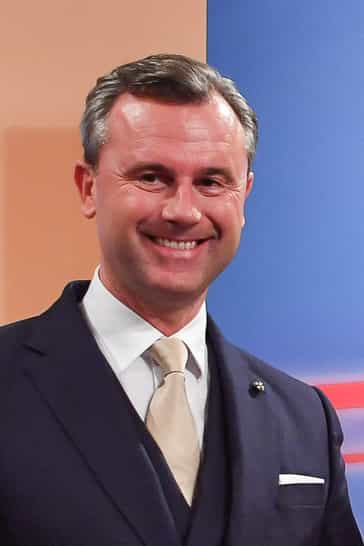
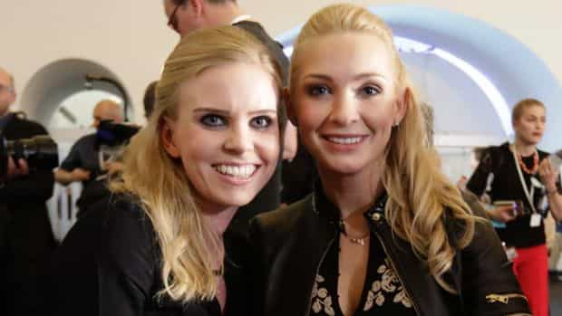

Austria’s conservative and nationalist parties have thrashed their leftist opposition, securing nearly 32% and 26.5% of votes respectively. The leader of the center-right Austrian People’s Party (ÖVP), Sebastian Kurz, is poised to become the youngest European head of government at just 31. He has additionally moved his party away from its recent cucked immigration policies.
Though Austria is a very small country, with ten times less people than Germany, it is hard to recall a more positive electoral victory in West European politics over the last few decades. Only the Brexit vote last year, which was a referendum and not an election, supersedes this event in terms of a strong rejection of national suicide.
The nationalist Freedom Party of Austria (FPÖ), led by Heinz-Christian Strache, is firming as the most likely coalition partner for the ÖVP, having just been pipped into third place by the Social Democratic Party (SPÖ). Prior to this election, the conservatives were in a cringeworthy grand coalition with the SPÖ.

Heinz-Christian Strache.
Perhaps the political classes, especially amongst the conservatives, will betray Austrian voters, but at first glance the election results represent a decisive blow against globalism and the ridiculous immigration policies (read: open borders mayhem) of the 2000s and 2010s.
What is even more heartening is that Austria, despite its putrid leftist parties, has not suffered as much socially as Germany since 2015. Austrian voters have nevertheless looked across the border and realized the importance of never ever going down the path of Angela Merkel’s mental asylum.
Moreover, the contemporary paralysis experienced by Germans over Nazism and the Second World War (“We have to let in millions of people we don’t know because Hitler!”) is much smaller in Austria. Yes, surprise, surprise, a group of German speakers feels less of a need to ruin their country over things they had nothing to do with 70-90 years ago.
Austria nearly had its first nationalist President last year

Within a whisker: Norbert Hofer was close to becoming Austria’s first nationalist President of modern times.
Heinz-Christian Strache’s protégé, Norbert Hofer, won the first round of the Austrian Presidential election last year. In two second rounds (the first of which was annulled), he nearly achieved a majority. What stopped him? Well, not only the usual mainstream media bias, but also a concerted effort by European elites of all persuasions (or perversions, take your pick) to associate Hofer and the FPÖ with Nazis and Hitler.
When the party was led by the late Jörg Haider and entered into a coalition agreement with the Austrian People’s Party, countless European politicians and officials boycotted the Austrian government at functions. The threat of this happening again lingered over the Austrian Presidential vote last year and, to his credit, Norbert Hofer demonstrated the incredible potential of a nationalist party like the FPÖ in weathering the storms of political correctness.
Parliamentary democracy is a different beast to choosing a head of state, but the FPÖ has built on its immense success in 2016, a year in which neither the conservatives nor the socialists made the second round of the presidential election.
You can tell a lot by a politician’s wife or girlfriend

Sebastian Kurz’s girlfriend and the wife of Heinz-Christian Strache.
On a final note, the girlfriend of Sebastian Kurz and the wife of Heinz-Christian Strache tell you a lot about these two men. When it comes to leftwing men and vacillating “conservatives,” we always expect a frumpy matron or, at best, a reasonably pretty wife bought with the male politician’s trust fund or stale social connections.
It’s nice to see that a definitely masculine man like Strache and a hopefully masculine man like Kurz have opted for women who fit the emphasis at Return Of Kings on female beauty and fertility.
Perhaps Europe stands a chance after all.
Read More: Today Is The Final Vote Of The 2017 French Presidential Election